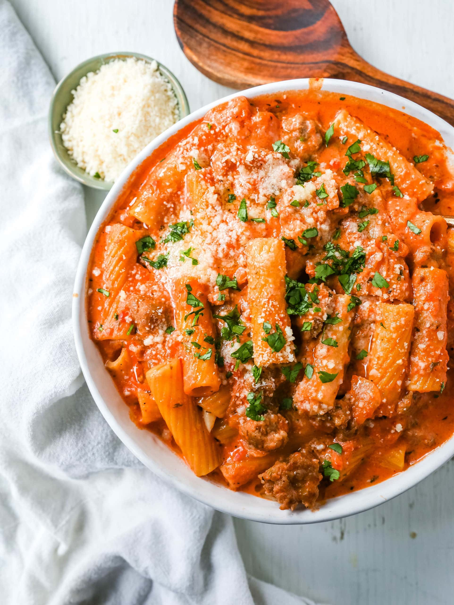

Creamy Sausge Rigatoni

Easy 30-Minute, One-Pot Pasta
Ingredients
- 1 tbsp olive oil
- 15 oz Italian sausage crumbled
- 8 oz rigatoni uncooked
- 1 cup chicken broth
- 1 cup heavy cream
- 4 cloves minced garlic
- 1 tsp Italian seasoning
- 15 oz tomato sauce
- 5 oz fresh spinach
- salt and coarsely ground black pepper
- red pepper flakes to taste
- Heat 1 tbsp of olive oil on medium heat in a large, hish-sided, heavy bottomed skillet on the stovetop.
- Add crumbled sausage and cook on medium heat for about 5min, crumbling it, until it is cooked through.
Drain any grease or liquid.
- To the same skillet with sausage, add uncooked rigatoni, chicken broth, heavy cream, minced garlic,
Italian seasoning, and tomato sauce.
- Bring to a boil on medium heat and stir everything well. Cover with a lid and allow the pasta to cook
for about 10 to 15 min on medium heat, while the sauce boils.
- Cook until pasta reaches an "al dente" texture. Stir frequently to prevent the pasta and sausage from sticking to
the bottom of the pan.
- Add fresh spinach, and cook on medium heat, stirring frequently for a couple minutes, until the spinach
wilts to your liking.
- Alternatively, just remove the skillet from heat, top sausage rigatoni with spinach, cover the pan with the lid.
Let the spinach wilt, off heat, in the residual heatfor about 4 min. Then, stir.
- Cook longer if you would like a thicker sauce.
- Mix everything well. Remove from heat. Season with salt, freshly ground black pepper, and red pepper flakes if you like.
Home